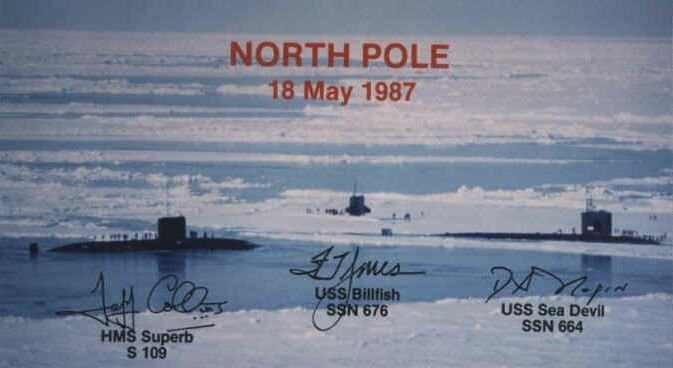
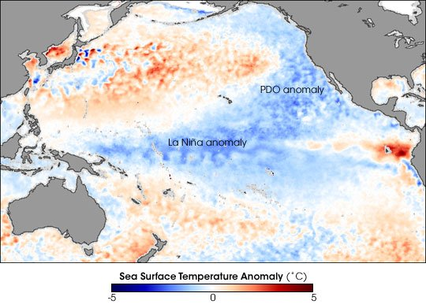
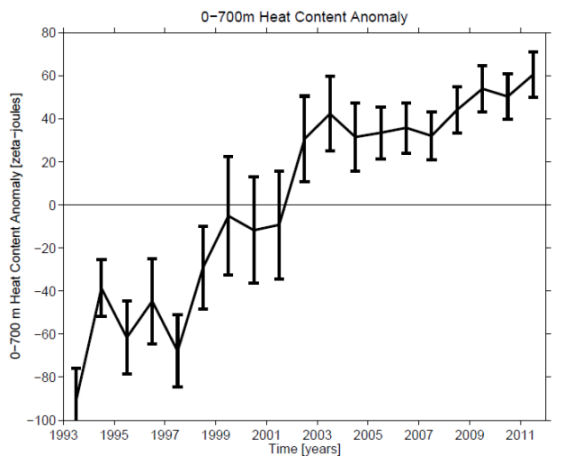
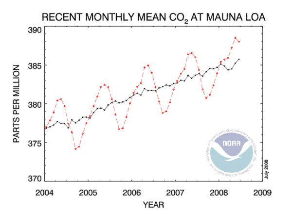

Cette page est destinée, en particulier (mais pas seulement), aux nombreux et fidèles lecteurs de ce site dont beaucoup sont ou sont devenus de fins connaisseurs du climat.
Nombre d'entre eux s'engagent dans des discussions dans les forums qui s'intéressent à ce sujet, lorsque les discussions sont encore possibles car, hélas, quelques uns de ces sites exercent une censure déterminée et inquiétante contre tout propos qui s'écarte de l'orthodoxie ambiante. Ces lecteurs assidus ont besoin de données actualisées au jour le jour sur les grands indicateurs du climat, tirées des meilleurs sites officiels.
Parmi les grands indicateurs utilisables en matière de climatologie, on distingue :
Ces relevés, constamment mis à jour, sont présentés ici sous forme d'un tableau en deux colonnes. La colonne de droite donne la dernière courbe relevée à partir des chiffres communiqués par des instituts officiels, lors de la mise en place de cette page (souvent Juillet 2008). La colonne de gauche donne des indications sur les échelles utilisées et quelques précisions sur la lecture de ces graphiques ainsi que la date du relevé.
Dans la plupart des cas, il vous suffit de cliquer sur les graphes pour obtenir la version actualisée à la date de votre consultation. Après consultation, cliquer sur la flèche retour de votre navigateur pour revenir sur ce site. Attention ! : Un certain nombre d'explications sont relatives au mois de Juin 2008, date à laquelle a été créée cette page. Elles ne sont là que pour vous aider à lire les graphiques. Pourquoi n'ai-je pas affiché directement les graphes mis à jours, me (se) demandent certains ? |
|---|
Vous pourrez d'ailleurs observer que beaucoup de ces graphes sont remis à jour quotidiennement et que certains de ceux qui figurent ci-dessous et qui datent du 18 juillet 2008, ont déjà été complétés. Comme dans la totalité de ce site, les sources sont précisées. Il faut être conscient qu'il existe un débat actif pour ne pas dire parfois venimeux sur (et entre) les sources elles-mêmes. La mesure est un art difficile et tout particulièrement en ce qui concerne les températures....
1) Les relevés de température sont principalement donnés par quatre institutions. Ces institutions utilisent des méthodes différentes à partir de données issues de sources également différentes.
La plus connue de ces institutions (mais aussi la plus contestée) est le Goddard Institute de la NASA dirigé par James Hansen. Ces relevés, baptisées GISTEMP (du GISS de la NASA) sont obtenus à partir de savantes (et malheureusement obscures et/ou inaccessibles) corrections des données issues d'un grand nombre de stations de températures terrestres dont l'emplacement a d'ailleurs constamment évolué au cours des années. Les relevés sont établis en faisant la moyenne entre les températures maximales et minimales quotidiennes. La distribution (non aléatoire et fluctuante) de ces stations de mesure sur la planète est sujette à de nombreuses critiques ainsi d'ailleurs que leur emplacement plus ou moins bien choisi vis à vis des perturbations de l'environnement immédiat, tout comme leur défaut d'entretien, leur proximité ou leur emplacement au sein "d'îlots urbains" (villes, industries etc.). Tout cela fait l'objet d'une enquête approfondie (notamment pour l'USHCN aux Etats-Unis) de la part d'un ancien météorologue américain (Anthony Watts qui gère un site spécialisé sur ces questions ainsi qu'un autre site sur les questions générales de climatologie ).
Un deuxième relevé de température établi à partir de données plus diverses, relève de la compétence du Hadley Center qui est la principale institution de climatologie et météorologie au Royaume Uni. Cette institution applique aussi de nombreuses corrections aux données brutes qui lui sont fournies mais ses résultats (souvent nommés HADCRUTxx), à la différence de ceux du GISS précédent, sont souvent plus proches des relevés des deux organismes qui gèrent les stations satellitaires et que je décris ci-dessous.
Les troisième et quatrième relevés de températures globales sont obtenus à partir de mesures effectuées par les satellites dédiés de la NASA et par des ballons sondes lâchés dans l'atmosphère. Deux organismes enregistrent en continu ces données sur la température qui règne dans l'atmosphère à différentes altitudes. Pour ce qui nous intéresse ici, seules les données dites TLT (Températures de la basse troposphère c'est à dire la tranche qui est en contact direct avec la terre) sont prises en compte. Pour plus de détails sur les relevés de température par satellites, allez visiter ce site. Ce site est mis à jour mensuellement par l'organisme RSS/MSU et AMSU (RSS signifie Remote sensing system = système de mesures à distance). L'organisme RSS est essentiellement financé par la NASA.
L'autre institution qui s'occupe de ce type de données est universitaire. Elle fait partie de l'UAH (Université de l'Alabama, Huntsville). Bien que les traitements (accessibles) des données du RSS et de l'UAH soient distincts, les résultats de ces deux dernières institutions sont généralement très proches l'un de l'autre. A noter que les mesures satellitaires sont bien globales et ne nécessite pas de traitement particulier station par station mais, par contre, elles ne peuvent accéder aux pôles du fait de l'incidence rasante des rayons de mesure. Après quelques difficultés (corrigées) liés au vieillissement des cellules ou à l'influence du déplacement en vol de ces instruments, on peut maintenant accorder la plus grande confiance à ces deux dernières mesures de température.
En résumé nous avons accès, mois après mois (Roy Spencer et Denis Brasswell de l'UAH font mieux puisqu'il communiquent leurs données brutes presque quotidiennement sur ce site), aux données du GISS (GISTEMP), du Hadley Center, du RSS et de l'UAH.
Note sur les relevés de température : Comme vous le savez, les relevés de températures généralement publiés ne représentent pas les valeurs absolues des températures mais les écarts par rapport à une moyenne relative à une époque antérieure. Ces écarts sont alors baptisés "anomalie " avec toutes les implications alarmistes que l'on imagine. Comme si la température choisie comme origine était "normale" ! Certainement pour des raisons qui n'ont que peu à voir avec la Science, les différentes institutions ont choisi l'origine des température (c'est à dire la moyenne de plusieurs années précédentes) de manière différente. Pour être absolument clair sur cette question délicate, voici le tableau des origines choisies par les quatre institutions dont je viens de dresser la liste :
| Source | Période origine |
|---|---|
| HADCRUT3 | Jan 1961 - Déc 1990 (30 ans) |
| GISTEMP | Jan 1951 - Déc 1980 (30 ans) |
| UAH | Jan 1979 - Déc 1998 (20 ans) |
| RSS | Jan 1979 - Déc 1998 (20 ans) |
Comme on peut le constater, le GISTEMP de James Hansen ainsi que le Hadley Center ont choisi des origines des températures dans la période où celles-ci étaient les plus basses, (faisant craindre, à l'époque, un nouvel âge glaciaire, voir le bêtisier ici). Ce choix a évidemment tendance à faire croire que les températures que nous connaissons actuellement sont encore plus "anormales" qu'elles le sont. Par exemple, par rapport aux années chaudes 1930-1940.
Par contre, l'UAH comme le RSS ont choisi comme origine des températures, la période qui a succédé à cette période froide, ce qui conduit à des anomalies de températures bien plus faibles que celles du GISS et du Hadley. On ne peut guère reprocher ce choix au RSS et à l'UAH puisqu'ils ont choisi l'année 1979 comme point de départ. Or 1979 est l'année où les satellites de mesures ont fait leur apparition.
Où va se nicher l'alarmisme ? Le diable est dans les détails dit-on, mais, bien entendu, la grande presse ignore tout cela et répercute les résultats les plus inquiétants sans préciser l'origine qui a été choisie, ni ce que cela implique...
Enfin, un ingénieur (Paul Clark, UK) en programmation a réalisé un programme en langage C++ très utile, qui vous permet de tracer vous même les courbes à partir des tableaux de données communiqués, en général au début de chaque mois, par ces quatre différentes institutions. Le site est ici. Il est d'un emploi assez aisé mais demande une certaine expérience pour réaliser des petites merveilles en matière de superpositions de courbes. A noter que Paul Clark, spécialiste en programmation déclare sur son site qu'il est totalement neutre sur la question de l'origine humaine ou non du réchauffement climatique. Il précise avec une phrase que je trouve frappée au coin du bon sens, que "Computers are great tools for helping you think; just never rely on them to do the thinking for you". C'est à dire "Les ordinateurs sont des instruments très utiles pour vous aider à penser; mais ne vous fiez jamais à eux pour penser à votre place." Il est dommage que beaucoup n'aient pas cette sagesse...
Plusieurs courbes que je vous donne ci-dessous proviennent directement de ce site woodfortrees.org (abrégé en WFT). A noter que vous pouvez vous-mêmes pratiquer quelques expériences à partir des sources que je vous ai indiquées.
(source) WFT2 Voici, à titre d'exemple, les anomalies de températures de 1998 à janvier 2014) relevées par les quatre institutions dont les noms et les codes couleurs sont rapportés en haut à gauche du graphique. Clquer sur le graphe pour obtenir la courbe actualisée avec les dernières données enregistrées. |
|
|---|---|
WFT3- Relevé des températures depuis 1900 par les quatre institutions. ((RSS en violet et UAH en bleu, n'ont commencé qu'en 1979) Les températures sont moyennées sur an et les décalages imposés aux courbes du GISS et du Hadley sont les mêmes que précédemment.On observe très bien, sur ces courbes, un minimum vers 1905-1910, puis un maximum vers 1940-1945 et un abaissement notable entre 1950 et 1975. Ceci correspond assez bien à des cycles de période d'environ 60 ans comme indiqué ici. Cliquer sur le graphe pour obtenir la courbe actualisée avec les dernières données enregistrées. |
|
WFT3- Relevé des températures depuis 1880 par les différentes institutions. (Les données satellitaires RSS en violet et UAH en bleu, n'ont commencé qu'en 1979).
Notez que la hausse des températures de 1910 à 1940 s'est produite avec sensiblement la même vitesse que celle de 1975 à 2000. |
|
Mars 2013 : Ce graphe était produit par l'AMSU UAH de Roy Spencer. Il donnait, jour après jour, l'évolution de la température de l'atmosphère à différentes altitudes. Je le conserve pour mémoire. |
Le détecteur à bord du satellite n'est plus opérationnel. |
Les courbes du GISS et du Hadley qui figurent dans le graphe WFT2 et WFT3 ci-dessus avaient été décalées respectivement de -0,24°C et -0,15°C. Voici le graphe (cette fois-ci sans décalage). qui donne les quatre relevés de température du GISS, du Hadley, du RSS et de l'UAH, L'auteur de ce graphe a effectué des régressions linéaires pour voir les tendances de 2002 à juin 2008. Comme on le voit, cette tendance est toujours au refroidissement, même dans le cas du GISS. (source). |
|
Comparaison (source Steve McIntyre) des données satellites UAH et thermométriques de la NOAA pour le mois d'octobre 2008 . Les données NOAA ont servi de base à la publication erronée du GISS de Hansen. En survolant avec votre souris cette image des données de la NOAA (corrigées et ramenées à la même période de base 1980-2000), vous pourrez voir les données correspondantes fournies par l'UAH. Vous pourrez constater vous-même que les différences étaient très nombreuses et importantes |
2) Les relevés de la masse des glaces des zones polaires Nord et Sud.
Concernant les glaces polaires, il convient de bien distinguer les parties englacées continentales de celles qui empiètent sur la mer. Ces dernières sont appelées "sea ice" en anglais. Elles gèlent et se dégèlent au rythme des saisons. De même, et notamment pour ce qui concerne le pôle Nord, seules les parties continentales marginales ont fondu (jusqu'à présent) sans affecter les parties centrales qui peuvent même voir leur volume augmenter comme dans le cas du Groenland. Les sources des courbes suivantes sont le plus souvent données par l' Arctic Climate Research de l'Université de l'Illinois. On trouve des courbes équivalentes sur certains sites de la NOAA ou d'autres universités. Elles peuvent parfois différer, sur certains points...et les divergences importantes ne sont pas exceptionnelles. Ici encore, la mesure est délicate.
Note du 15 septembre 09 : Une étude intéressante de l'évolution comparée des glaces arctique et antarctique (merci au lecteur averti)
Note du 25 février 2009 : Attention !
Les détecteurs de satellite (DMSP F15) qui sont utilisés par le NSIDC et Cryosphere ont subi une grave défaillance détectée le 16 février 09. C'est ainsi que près de 500 mille km2 de glace (sur 14 millions) avaient disparu brutalement de la mer arctique en l'espace de quelques heures ! Les chercheurs concernés ont immédiatement essayé de corriger l'erreur mais ont détecté que ces anomalies remontaient à, au moins, 45 jours...Les détecteurs sont défaillants.
L'image ci-contre a été publiée sur le site du NSIDC le 15 février. Quelques heures après, elle était retirée.
On perçoit très bien l'anomalie qui a alerté un grand nombre de lecteurs attentifs. En réalité cette défaillance brutale succédait à une lente dérive qui s'est prolongée durant plusieurs semaines. Il semble que les chercheurs obtiennent maintenant leurs mesures à partir d'un autre détecteur situé sur le satellite.
Et voici les images satellites juste avant et juste après l'erreur du détecteur (cryosphere today). D'énormes trous semblent s'être creusés dans la mer de glace de l'arctique en quelques heures. Compte tenu de la température qui règne en arctique en ce moment... ça attire l'attention ! La mer prise par les glaces est en violet.
Il est intéressant (ou inquiétant ?) d'observer que ces anomalies aient été détectées et signalées par des Internautes et non pas par les responsables qui ont mis ces images et ces chiffres en ligne .
(source News du 18 fév).
Ci-contre, un graphique qui illustre la sous-estimation de la détection par SSM/I (en bleu, utilisée par le NSIDC) défaillant par rapport à la méthode plus moderne AMSR-E (en rouge) du 1er décembre au 12 février 2009. Attention, pour les anglophones 12/22 signifie le 22 décembre pour nous.
En attendant, je vous conseille d'utiliser les données NORSEX et IARC-JAXA qui semblent correctes...à priori. Mais comme les ajustements ne sont pas totalement indépendants, restons prudents. Références (ici , ici et ici )
Bien sûr, cela n'a rien à voir avec l'erreur récente du GISS (voir ici) qui avait carrément substitué les données de température d'Octobre 2008 par celles de Septembre 2008, créant ainsi une anomalie de température extraordinaire (détectée aussi par les Internautes).. mais quand même, ça fait beaucoup. On aimerait bien trouver, de temps en temps, des erreurs dans l'autre sens, ne serait-ce que pour calmer l'hystérie des médias qui s'en donnent à coeur joie en matière d'alarmisme et ne mentionnent jamais les rectifications...
Anomalie de la glace de mer antarctique ( pôle Sud) de 1979 à juin 2008.
|
||
|---|---|---|
Anomalie de la glace de mer arctique ( pôle Nord ) de 1979 à juin 2008. (source) On aperçoit très bien sur ce graphe la baisse remarquable de la "sea-ice" (mer glacée) du pôle Nord intervenue en septembre 2007 et qui serait due à des vents du sud persistants provoquant la fonte des glaces à partir du mois de Juin-Juillet 2007. On voit aussi la remontée spectaculaire de la glace de mer jusqu'au printemps 2008 et la descente estivale qui suit. Celle-ci fait craindre à certains une fonte quasi totale. Les graphes suivants nous laissent penser que ce ne sera pas le cas et que le record de fonte de 2007 ne sera pas battu... |
||
Anomalie de la glace de mer arctique sur un an ( de date à date jusqu'en fin juillet 2008) (source) La courbe du haut ne représente qu'un agrandissement de la courbe précédente. La courbe du bas est plus intéressante. Elle montre l'anomalie par rapport à la moyenne (1979-2000). On y voit très bien le minimum marqué de septembre-octobre 2007. On constate aussi que la quantité de mer glacée de cet été 2008 est d'environ 0,9 millions de km carrés supérieure à la quantité de mer gelée de l'année dernière à la même date. Il est donc peu probable que l'on atteigne le minimum de l'année 2007... |
||
Suivi de l'anomalie de la glace de mer de l'arctique sur les derniers mois de 2008 jusqu'en mi juillet.(source, NSIDC Boulder, Colorado) Comme on le voit très bien sur ce graphe, la fonte brutale des glaces de mer arctique de 2007 s'est produite à la fin du mois de Juin suite à un régime de vents du Sud très durable. Par contre, en 2008 (trait bleu) cet événement n'a pas eu lieu et la fonte suit à peu près la courbe des données moyennes (1979-2000). Cliquer sur le graphe pour obtenir la courbe actualisée avec les dernières données enregistrées. |
||
L'Université de L'illinois propose ces deux vues satellites qui se correspondent date à date en 2007 et 2008. (source)
Cette vue semble en désaccord avec les données NISDC. Cependant il faut être conscient des distorsions de l'image. |
Pour obtenir des vues à des dates différentes que vous pouvez choisir, il vous suffit cliquer sur cette image. |
|
26/10/10 : L'Université de l'Illinois, Cryosphere Today, propose désormais une vue animée de l'évolution de la glace Arctique sur les 44 derniers jours. L'épaisseur de la couche glacée est indiquée suivant le code des couleurs indiqué en bas de l'image.
Il est possible de changer la vitesse de l'animation, voir image par image etc... toutes possibilités offertes pa Java.
Evidemment, le premier chargement est un peu long. Java indispensable. |
||
Une autre vue annuelle de l'évolution de l'extension de la glace de la mer arctique, indiquant les relevés des année précédentes.
|
Note du 16 Juin 2010 : Lorsque que le graphe ci-dessus estime l'étendue des glaces polaires nord, au 16 juin 2010, à environ 10 millions de km2, le graphe Danois ci-dessous ne trouve, lui qu'environ 7,5 millions de km2, soit 2,5 millions de km2 de moins ! |
|
Voici une version Danoise (COI-DMI)) de la couverture totale de la mer glacée de l'hémisphère Nord. Ces courbes proviennent de l'Ocean and Sea Ice, Satellite Application Facility (OSISAF), où les zones qui contiennent une concentration de glace supérieure à 30% sont classifiées comme glace. |
||
Voici la version Allemande de l'Université de Brème pour l'extension de la glace arctique. MAJ 11/06/2016 |
||
Voici l'évolution mensuelle de l'anomalie (par rapport à la moyenne de la période 1979-2008) de l'étendue de la glace de mer de l'hémisphère Nord, selon Cryosphere Today du Polar Research Group de l'Université de l'Illinois (Urbana-Champaign). Cette image cliquable (pour mise à jour) date du 23 avril 2012. Remarquez la descente apparemment en accélération de 1979 à 2006. Depuis le minimum de 2007, la situation moyenne semble stabilisée avec de grandes fluctuations. Note : 05/2016 : Le détecteur du satellite a connu une grave avarie à partir d'Avril-Mai 2016. |
 |
|
23 Août 2012 : Alors que l'extension de la glace de mer arctique semble approcher un minimum remarquable, il apparaît que différentes institutions donnent des observations différentes. Celle (qui est cliquable) ci-contre provient du National Ice Center (NIC un organisme partagé entre la Navy US, la NOAA et les gardes côtes US. Le NIC est chargé de fournir des informations fiables aux navigateurs. Les techniques utilisées par cet organisme, appelée IMS (Ice Mapping System) sont plus complètes que celles des observations satellitaires habituelles. Les différences entre les différents relevés peuvent être importantes notamment lorsqu'il s'agit d'observer de la glace fracturée comme après le passage d'un fort cyclone tel que celui du 8 août au dessus de l'arctique. |
||
| Jan. 2015 : Bilan de la masse de glace du Groenland selon le DMI (Danemark) Le graphique ci-contre montre le bilan de la masse de glace accumulée en surface à partir du premier septembre jusqu'à présent (ligne bleue, en Gt) ainsi que la saison 2011-2012 (ligne rouge) qui a connu une forte fonte durant l'été Groenlandais. A titre de comparaison, la courbe moyenne de la période 1990-2011 est indiquée en gris. |
||
Suivi de l'anomalie de la glace de mer de l'antarctique sur les derniers mois de 2008 jusqu'en mi août.(source, NSIDC Boulder, Colorado) En fin 2007 et début d'année 2008 , l'antarctique avait battu tous ses records d'extension avec plus d'un million de km2 d'excédent par rapport à la moyenne. Au mois d'août, il a rejoint la moyenne 1979-2007. .Cliquer sur le graphe pour obtenir la courbe actualisée avec les dernières données enregistrées. Note : 25 Sept 2013. L'URL du graphe a été actualisée. En effet, le NSIDC a récemment modifié la période de référence, passant de 22 ans à 30 ans. |
||
Anomalie de la glace de mer antarctique (pôle Sud) sur un an (de date à date) (source) vue par l'Université de l'Illinois. La courbe du haut ne représente qu'un agrandissement de la courbe que vous avez vue ci-dessus. La courbe du bas est plus intéressante. Elle montre l'anomalie par rapport à la moyenne (1979-2000). Cliquer sur le graphe pour obtenir la courbe actualisée avec les dernières données enregistrées.
|
||
: Un graphique interactif du NSIDC (et NASA) qui donne les évolutions des banquises arctique et antarctique (cliquer sur arctic/antarctic pour choisir), année après année. Il suffit de cliquer sur les années indiquées dans la colonne de droite pour superposer le graphique correspondant sur les graphiques des années déjà représentées. Ces graphiques sont lissés et ne montrent pas les fluctuations telles qu'on peut les voir sur d'autres bases de données. La zone en grisé représente la zone d'incertitude à + ou - 2 sigma autour de la moyenne des extensions de la période 1981-2000. |
||
Nouveau : 4 août 2016 Epaisseur et volume de la glace arctique selon le DMI (Danish Metorological Institute) L'échelle des épaisseurs est donnée par le code des couleurs en bas. Cliquer sur le graphique pour le voir actualisé à la source, en plus grand. |
||
Nouveau : 5 août 2016 Volume de la glace arctique selon le DMI (Danish Metorological Institute)
Cliquer sur le graphique pour le voir actualisé à la source. |
||
Graphe de latempérature moyenne de l'Arctique T799 ( rouge) selon le jour de l'année. (source) Le tracé vert ERA40 représente la moyenne des températures relevées entre les années 1958 à 2002. Le relevés concernent la région située au Nord du 80ème parallèle Nord. Ce graphique est actualisé jour après jour par le Center for Ocean and Ice de l'Institut de Météorologie Danois. (DMI). Cliquer sur le graphe. |
||
L'Arctique est en réalité un mer recouverte de glaçons flottants plus ou moins disjoints. Les sous marins nucléaires américains on souvent émergé, précisément au pôle Nord pour y effectuer des observations. A l'inverse, l'Antarctique ( pôle Sud) est un vrai continent recouvert de glace, comme le Groenland. Vers la fin août s'ouvre souvent un passage de mer libre au Nord-Ouest de l'arctique. Celui-là même qu'ont vainement cherché Francis Drake et James Cook et qu'Amundsen a franchi en 1906 avec un petit bateau à voile (Le Goja) équipé d'un moteur de 15CV. |

Illustration : Cette photo a été prise en 1987 lors d'un rendez-vous très précisément situé au pôle Nord. Elle est signée par les commandants des trois sous marins HMS Superb, USS Billfish et USS Sea Devil. On aperçoit les taches bleues de la mer libre de glace. Entre autres, en 1922, les rapports des explorateurs déclarent qu'on n'a jamais vu si peu de glace (source) en Arctique...Un navire a atteint le 81N sans voir de glace... |
3) Les relevés de température des océans (Notamment PDO, ENSO)- Oscillation Arctique (AO)
Comme on le sait, les 3000 balises Argo ont indiqué que la température moyenne des océans n'augmentait plus depuis 2003, voire était en légère décroissance. Tout comme pour les températures terrestres, la moyenne des températures océaniques est difficile à établir à cause de la présence plus ou moins oscillante de diverses zones froides ou chaudes qui affectent différentes zones des océans. Parmi celles-ci la Pacific Decadal Oscillation (PDO) et les phénomènes El Niño (chaud) ou La Niña (froid) jouent un rôle déterminant sur le climat terrestre. Voici quelques données parmi d'autres.
WFT4. (source) Indice de l'oscillation décennale Pacifique (PDO) JISAO de 1900 à nos jours. L'oscillation PDO (environ 60 ans) est une découverte récente. Notez en comparant avec les courbes de températures précédentes que la coïncidence entre les périodes froides (1945-1975) et chaudes (1930-1945 et (1980-1998) de la PDO correspondent parfaitement avec les températures terrestres.Or, la PDO est revenue en régime froid depuis 2005-2007...alors ... |
 |
|---|---|
Indice ENSO (source NOAA) C'est l'indice officiel caractérisant les El Niño/Southern Oscillations depuis 1950 jusqu'à nos jours. Notez encore une fois la corrélation frappante du bleu avec la PDO et avec les températures terrestres froides (1945-1975) Idem pour les chaudes. Nous sommes partis pour une période froide riche en La Niña. Le rouge indique les périodes El Niño |
Cliquer sur le graphe pour obtenir la courbe actualisée avec les dernières données enregistrées. |
Anomalie de température due à la PDO et à l'ENSO en avril 2008. (source NASA). L'année 2007-2008 a été une année La Niña comme on le voit sur le graphe précédent. En Juin 2008, la Niña qui a été exceptionnellement tenace, s'est affaiblie mais la PDO froide (en bleu) persiste encore image non réactualisable. |
 |
Sondes TAO /TRITON (Tropical Atmosphere Ocean Project) (source) pour suivre l'évolution des La Niña/ El Niño) Ce diagramme vous permet de suivre l'évolution de la température de surface (SST) de l'Océan Pacifique le long de l'équateur (140°E-100°W) entre l'Amérique du sud (à droite) et l'Indonésie (à gauche). En ordonnées, les latitudes ( à gauche) et les températures (à droite). La moyenne est faite sur les cinq derniers jours. |
|
Anomalie de la SST (Sea Surface Temp, température de surface des océans) le 12 Juillet 2008 (source) Comme on le voit, les "bleus" indices de refroidissement dominent sur ce graphe. IL n'y a que peu de vert et de jaune. La queue de la Niña est encore active dans le centre du pacifique tandis la PDO (froide) est toujours en place à proximité des côtes ouest de l'amérique du Nord. A noter aussi un refroidissement sur la côte ouest du Groenland. Cliquer sur l'image pour obtenir une vue actualisée avec les dernières données enregistrées. |
|
L'Oscillation Arctique AO (données NOAA) L'Oscillation Arctique est un mode de circulation atmosphérique dans lequel la pression atmosphérique au dessus des régions polaires, varie en opposition avec celle qui règne au dessus des latitudes moyennes (ie 45° N) durant des périodes allant de quelques semaines à quelques décennies. L'Oscillation s'étend dans toute la profondeur de la troposphère. J'ai rajouté cet indicateur car il permet de prévoir les vagues de froid sur l'Europe (voir schéma en haut) en cas de AO très négatives. |
|
|
Le suivi et la prévision de l'indice AO sont de bons indicateurs de la température qui va régner sur l'Europe du Nord et sur une grande partie septentrionale de l'hémisphère Nord.
Voici donc une suite de graphes (cliquable pour une remise à jour) qui donne les prévisions du CPC (Climate Prediction Center de la NOAA) à 7, 10 et 14 jours.
Ces graphes sont réactualisés quotidiennement. Il existe également sur le même site, une suite de graphes similaires pour la NAO.(Oscillation Atlantique Nord) |
|
Toujours en relation avec l'Arctic Oscillation qui est jumelle de la North Atlantic Oscillation NAO. Un lecteur attentif a attiré mon attention sur les graphes ci-contre qui permettent de visualiser assez simplement comment le signe de l'AO/NAO permet de comprendre pourquoi les entrées d'air froid peuvent intervenir dans une partie de l'hémisphère Nord. L'indice NAO est une mesure du différentiel de pression existant entre la zone des Açores et une zone située au dessus de l'Islande. |
Dans le cas d'une NAO+ , il règne une zone de haute pression H au niveau des Açores et une zone de basse pression L au dessus de l'Islande. L'air doux soufle d'ouest en est, sur les USA et l'Europe . En situation de NAO-, la situation des hautes et basses pressions est pratiquement inversée.Les hautes pressions sont au Nord, les basses au Sud.
En situation de NAO- , le jet stream n'est plus rectiligne mais subit des ondulations permettant à l'air polaire d'atteindre les régions situées à l'Est des jets streams descendants. C'est d'ailleurs pourquoi l'Europe n'est pas la seule concernée par ces descentes froides. La météorologie très enneigée de l'hiver 2010 du nord-est des USA, avec des tempêtes de neige historiques en est le meilleur exemple.
|
Contenu thermique des océans. Voici le graphe représentant la variation de l'anomalie du contenu thermique exprimé en zeta-joule (1021 J) de la couche allant de 0 à -700 m des océans de la planète (OHCA = ocean heat content anomaly). Plusieurs climatologues, dont R. Pielke Sr, estiment que l'utilisation de cette métrique serait nettement plus pertinente que la mesure de la température de l'air à la surface de la planète. |
 |
4) Les données sur les cycles solaires
Si vous avez lu cette page de ce site, vous savez qu'une des deux principales hypothèses du changement climatique actuel repose sur l'activité éruptive du soleil. C'est pour cette raison et aussi parce que les éruptions solaires sont responsables de difficultés pour les satellites et pour les communications qu'un grand nombre de chercheurs suivent de très près tout ce qu'il se passe sur notre astre solaire. En parallèle avec celui du groupe de la NASA, il existe un grand nombre de sites tenus par des amateurs éclairés (tel que celui-ci) ou des professionnels qui suivent, jour après jjour, l'évolution de l'activité du soleil. Comme nous le savons, il ne suffit pas d'enregistrer ce que l'on appelle la TSI (Total Solar Irradiance) émise par l'astre du jour, mais un grand nombre d'autres paramètres comme le magnétograme, le flux de rayons X, les aurores boréales, le vent solaire et, bien entendu, le "sunspot number" qui est le critère N°1 de l'activité du disque solaire tout comme le relevé des rayons cosmiques. Vous trouverez quelques détails à ce sujet dans cette page.
Le "Sunspot Number" officiel vu par la NOAA (source). Actualisé tous les mois. Le cycle passé (le 23) est représenté par les points relevés tous les mois. La courbe en bleu est la moyenne. Les deux courbes à droite sur le dessin, représentent les deux prédictions pour le cycle 24 actuellement en cours à la NASA. En gros, soit un cycle faible (maximum 90) soit un cycle moyen (maximum 140). Les chercheurs de la NASA n'ont pu se départager... 16/01/15 : lien rafraîchi. |
|
|---|---|
Comme vous le savez, le cycle 24 se fait beaucoup attendre. Ceci a forcé les prévisionnistes de la NASA comme Hathaway à revoir plusieurs fois leurs prédictions pour le cycle 24. En voici un très joli exemple : Si vous cliquez sur cette image vous verrez une petite animation (mise à jour le 5/10/08) montrant les réajustements successifs des prédictions. Il existe un tableau résumant les prédictions d'une trentaine de chercheurs solaristes. |
Image animée due à Michael Ronayne (affichée sur Wattsup) -Cliquez sur l'image. |
WFT5- Vous trouverez également des données sur les cycles solaires sur le site WPT. Comme celles-ci qui proviennent du SIDC (Solar Influence Data Center à Bruxelles) Le dernier cycle représenté à droite est le cycle 23. La calcul du Sunspot Number est maintenant normalisé. Ce calcul est loin d'être évident car il n'est pas simple d'évaluer le nombre des taches qui se superposent dans le temps et dans l'espace, ni de tenir compte de leur activité. |
|
WPT6 - Un autre indicateur important est la Total Solar Irradiance (TSI) : L'irradiance solaire totale (source) qui est mesurable mais dont le calcul exact revêt différentes formes (plus ou moins conflictuelles). Celle-ci s'appelle la "PMOD composite monthly average" (source des données ici avec explication sur les méthodes du PMOD). Comme vous le voyez la TSI suit les cycles solaires d'assez près. Remarquez la chute notable de l'irradiance solaire totale depuis plusieurs mois. Courbe du 16/07/08 Cliquer sur le graphe pour obtenir la courbe actualisée avec les dernières données enregistrées. |
|
Voici un autre traitement de la Total Solar Irradiance (TSI) cette fois-ci par une source NASA SORCE (Solar Radiation and Climate Experiment). Ce graphe est à très grande résolution temporelle. On y observe très bien l'effet du cycle solaire de 27 jours ainsi que la décroissance de la TSI depuis 3 mois ( au moins). Ce graphe est du 16 juillet 2008.
|
|
Ci-contre un relevé du flux cosmique qui impacte la terre enregistré par la station de Moscou (Moscow Neutron Monitor) (source) Le relevé figurant sur cette page va du 1er Janvier 1968 jusqu'au 31 Juillet 2008. L'échelle verticale est en %. Si vous cliquez sur le lien pour réactualiser, vous devrez définir les limites temporelles du relevé recherché. Notez l'anti-corrélation étroite avec les cycles solaires. |
5) Les relevés des taux de CO2, du CH4 et de la vapeur d'eau dans l'atmosphère
Voici un relevé officiel provenant du site de Mauna Loa (Un volcan à Hawaï)(source) ESRL (Earth System Research Laboratory de la NOAA) pour ces dernières années jusqu'à la mi Juillet 2008. La station de Mauna Loa utilise des méthodes spectroscopiques très précises pour ces relevés. Autrefois les méthodes chimiques donnaient aussi de bons résultats mais ces derniers ont été délaissés au profit des données de carottage glaciaire... sans aucune explication (voir ici) On observe très bien les oscillations liées aux saisons. La courbe en noir est une courbe corrigée de l'effet saisonnier. Cliquer sur le graphe pour obtenir la courbe actualisée avec les dernières données enregistrées. |
 |
|---|---|
Toujours provenant du laboratoire NOAA/ESRL, voici le graphe de la variation du taux de CO2 prélevé sur une série de sites marins distribués sur les océans mondiaux. Les prises de CO2 sont effectuées à proximité de la surface. La courbe en rouge correspond aux valeurs moyennées sur un mois tandis que les points noirs représente les mêmes valeurs corrigées des variations saisonnières. Notez les différences importantes entre ces résultats de mesures (qui ne remontent qu'à 2004) et ceux de Mauna-Loa ci-dessus. |
|
Voici un relevé du taux de CH4 provenant de la même station de Mauna Loa, de 1985 à la mi juillet 2008. Réactualisée tous les jours. En gris, les données encore fragmentaires. (source) Notez la saturation très nette et plus ou moins incomprise du taux de méthane à partir de 1999, qui ne semble pas avoir continué jusqu'en 2010, au moins. Si vous cliquez sur cette image pour actualiser, vous devrez préciser que vous désirez les données sur le CH4. |
|
Humidité spécifique globale de l'atmosphère jusqu'à 300mb (sommet de la troposphère, vers10km d'altitude). Relevé de la NOAA( moyenné sur un an). L'humidité spécifique est la masse totale de vapeur d'eau contenue dans un volume d'air divisée par la masse d'air humide. Un air plus chaud peut contenir plus de vapeur d'eau de telle façon que l'humidité spécifique croît quand la température augmente. Comme on le voit sur cette courbe, l'humidité spécifique de notre troposphère décroît depuis les années 1990 . Le trou des années 1950 à 1980 est conforme à la baisse des températures observées à cette époque. Ceci peut-être corrélé avec l'article de Miskolczi. |
|
Et voici le graphe du taux de CO2 vu par WFT (source) de 1990 à la mi-juillet 2008. La courbe médiane est obtenue en moyennant les données sur 12 points de mesure. En cliquant sur cette courbe, comme dans beaucoup de celles qui précédent, vous obtiendrez la courbe à la date de votre consultation. |
6) Les relevés du niveau des mers
La mesure du niveau des mers est une chose très délicate. Compte tenu de la petitesse des grandeurs à mesurer, les données des jauges terrestres doivent être corrigées du mouvement des sols ( Par exemple, Hong-Kong s'enfonce peu à peu). C'est pourquoi les mesures satellitaires exemptes de ces difficultés, ont été préférées depuis l'année 92. D'autre part, les variations du niveau de la mer sont différentes d'un point à l'autre de la planète et les mesures par jauges terrestres se trouvaient confrontées aux mêmes problèmes que la thermomètrie habituelle (GISSTEMP).
Deux systèmes de mesures par satellites se sont succédés : Le système TOPEX-POSEIDON, actif de 1992 à 2005, puis le JASON-1 lancé en 2001 qui a pris le relais jusqu'à nos jours. Les graphes suivants sont, en principe, actualisées tous les dix jours. L'incertitude est de 3 à 4 mm ce qui peut paraître énorme quand on voit que la variation typique du niveau est de l'ordre de 3mm/an. Vous trouverez plus de détails sur le site de l'Université du Colorado qui gère ces mesures. Compte tenu de la très faible compressibilité des masses océaniques, les corrections dues aux variations de la pression atmosphérique sont très peu perceptibles (d'où la mention "Inverse barometer not applied").
DeltaMSL signifie "variation du niveau moyen des mers . (MSL =Mean sea level)
De manière générale et contrairement aux affirmations hasardeuses que l'on peut lire ou écouter dans les médias (ou les sermons d'Al Gore), le niveau des mers s'élève depuis de très nombreuses années et ceci a commencé bien avant l'ère industrielle humaine comme on le verra ci-dessous. De fait, la hausse du niveau des mers résulte majoritairement de la dilatation de la masse océanique due au réchauffement et non pas de la fonte des pôles ou des glaciers. Ainsi, on s'attend à ce qu'une baisse de température des océans se traduise par une baisse du niveau des mers, comme semble le montrer le graphique suivant. En effet les balises ARGO ont montré que la température des océans n'augmentait plus depuis 2003 au moins. Voir ici.).
Hausse du niveau des océans depuis 18.000 ans. Cette figure, extraite de la collection Global Warming Art, est basée sur des travaux sérieux (source).
Elle nous montre que la hausse du niveau des océans à l'époque qui a suivi la dernière période glaciaire (dont la fin remonte à 12000- 14000 ans), s'est poursuivie sans interruption jusqu'à nos jours, avec un ralentissement brutal qui correspond au moment où l'ensemble des surfaces glacées (à l'exception des deux pôles) à achevé sa fonte. L'amplitude totale est d'environ 130m. Depuis environ 7000 ans, les océans continuent de monter tout doucement.... |
Je vous invite à la plus grande modération quant à l'interpération des données sur la hausse des océans.
|
|
|---|---|---|
La mesure précise du niveau global des océans est une opération très difficile qui nécessite de nombreuses corrections. La hausse ou la baisse des niveaux est extrêmement inhomogène à la surface du globe sans compter que les îles et les continents s'enfoncent ou s'élèvent... Deux méthodes différentes sont utilisées. L'une, altimétrique, utilise des mesures satellitaires (Jason, Topex)(graphe ci-dessous). |
Evolution du niveau moyen des mers du globe à proximité des côtes selon les mesures marégraphiques gérées par le PSMSL UK, de 1870 à 2007. La hausse est à peu près constante depuis 1870 est représente + 1,8 mm/an environ. D'autres perçoivent une légère accélération quadratique...(merci au lecteur expert) |
|
(30/09/13) Mise à jour du précédent graphe qui a été interrompu par l'université du Colorado. Celui-ci, toujours de l'UC, donne les résultats de TOPEX (ronds rouges) puis JASON (carrés verts et triangls oranges) Ce sont des mesures altimétriques sur l'ensemble du globe. Le graphe en bleu représente la moyenne glissante sur 60 jours. .Notez la différence considérable entre les données altimétriques et les données marégraphiques côtières. (Voir l'effet des gyres). Cliquer sur le graphe pour obtenir la courbe actualisée avec les dernières données enregistrées. |
||
Juin 2011 : Le site AVISO (Archiving, Validation and Interpretation of Satellite Oceanographic data) propose un logiciel interactif de tracé de graphes et de cartes . Entre autres, ce site fournit un graphe (estampillé CNES, ESA, LEGOS, CLS) indiquant la variation du niveau global des mers multi-mission (Jason, Topex/Poseidon, Envisat etc..) tel que représenté sur l'image ci-contre.
|
|
7) Les relevés de l'activité cyclonique :
L'activité des cyclones du globe fait l'objet d'une surveillance attentive par le COAPS (Center for Ocean-Atmospheric Studies) de l'Université de Floride. C'est un chercheur du COAPS, Ryan Maue, qui se charge de collecter et de publier les observations sur l'ensemble du globe. L'indice retenu pour mesurer l'activité des cyclones s'appelle l'indice ACE (Accumulated Cyclone Energy, l'énergie cyclonique accumulée). Il est calculé d'après une formule faisant intervenir la sommation des carrés des vitesses du vent mesurées par satellite.
Le graphe (réactualisable en cliquant sur l'image) du COAPS, ci-contre représente l'indice ACE (Accumulated Cyclone Energy) globale (courbe du haut) et de l'hémisphère Nord (courbe du bas). L'ACE s'exprime en unités d'une vitesse au carré (énergie cinétique), ici en noeuds (kts). Comme on le constate, et contrairement aux prévisions ultra-pessimistes de certains, tels que Al Gore, l'activité cyclonique est plutôt en baisse depuis les années 90. |
Le graphe du haut (carrées bleu clair) représente la valeur moyenne de l'indice ACE sur l'ensemble du globe. Le graphe du bas (carrés gris) représente la valeur moyenne de l'indice ACE de l'hémisphère Nord. La surface intermédiaire entre la courbe supérieure et inférieure représente l'indice ACE de l'hémisphère Sud. Noter que l'ordonnée correspondant à chaque année représente l'indice ACE moyenné sur les 24 mois précédents la date. |
|---|
8) Le relevé des radiations infra rouges qui quittent la planète (OLR = outgoing Longwave Radiation)
Comme chacun le sait, la Terre, constamment réchauffée par le soleil ne peut conserver une température approximativement constante, qu'en rejetant l'équivalent de ce qu'elle reçoit, vers l'espace, sous la forme de radiations infrarouges.
Ce flux sortant vers le cosmos et que lon mesure au sommet de l'atmosphère, s'appelle l'OLR (outgoing longwave radiation). Ce flux est mesuré en permanence, depuis les années 1970-80 par une série de satellites qui établissent, au quotidien, une cartographie complète de l'OLR (tous les détails sur ce site).
Pour sa part, le Bureau de Météorologie Australien (BOM) , publie une évaluation quasi-quotidienne de l'OLR pour une portion significative située autour de l'équateur (7,5°S_7,5°N), s'étendant de 170E à 170W. Voici le graphique actualisable (encliquant dessus) de l'OLR du BOM.
Le graphe (réactualisable en cliquant sur l'image) de l'évolution du flux infra-rouge (autrement dit de la chaleur) émis par la Terre vers l'espace, au dessus de la zone équatoriale depuis plus de trois ans. L'échelle verticale est graduée en W/m2. Le trait pointillé représente la base climatologique durant la période 1979-1998. A noter que depuis Nov jusqu'au 13 Mars (date de ce graphique), le flux IR sortant est à son maximum (de 270W/m2) qui avait été égalé en 2008. |
|---|
Bonne consultation.
A suivre...
Mis à jour le 05 oct 2008 (ajout du graphe TAO-TRITON et image animée des ajustements des prévisions de la NASA, pour les sunspots)
Mis à jour le 13 oct 2008 (ajout de la courbe de l'humidité spécifique de la troposphère de la NOOA)
Mis à jour le 21 oct 2008 (ajout du graphe Arctic Roos, Nansen)
Mise à jour le 08 nov 2008 (ajout du graphe NOAA/ESRL : taux de CO2 global marin)
Mise à jour du 27 nov 2008 (changement du lien du Arctic Roos, Nansen et ajout de la comparaison NOAA-UAH)
Mise à jour du 27 Jan. 2009 (ajout du graphe de la montée du niveau des océans depuis 18.000 ans)
Mise à jour des 25, 27 /02 et 01/03/2009 : compléments sur les défauts du satellite d'observation de glaces arctique.
Mise à jour du 18 août 2009 : ajout du graphe de la température arctique du DMI
Mise à jour du 29 octobre 2009 : Les vues de l'arctique par Cryosphère Today sont défaillantes depuis le 25 février 2009. Dommage !
Mise à jour du 25 Janvier 2010 : Ajouté données marégraphiques et supprimé plusieurs commentaires désormais caduques.
Mise à jour du 7 février 2010 : Ajouté graphe AO de la NOAA.
Mise à jour du 11 mars 2010 : Ajouté citation de Carl Wunsch et de la surface de mers glacé de l'HN selon le COI Danois.
Mise à jour du 17 Juin 2010 : Ajout d'une explication sur les différences des relevés des glaces du JAXA et du COI danois.
Mise à jour du 08 Octobre 2010 : Ajout du relevé de l'activité cyclonique (indice ACE Accumulated Cyclone Energy) COAPS.
Mise à jour du 26 Octobre 2010 : Ajout de la représentation animée de l'évolution de la glace Arctique sur 44 jours.
Mise à jour du 20 Novembre 2010 : Ajout des prédictions de l'AO index par le CPC de la NOAA.
Mise à jour du 10 Décembre 2010 : Ajout de la courbe WFT brute (non lissée) de 1900 à nos jours.
Mise à jour du 13 Mars 2011 : L'OLR du BOM.
Mise à jour du 13 Juin 2011 : Ajouté graphe du MSL d'Aviso.
Mise à jour 6 Déc. 2011 : Réparé lien brisé UC Topex, Jason.
Mise à jour 5 Mars 2012 : Ajouté raison pour laquelle tous les graphes ne sont pas actualisés automatiquement
Mise à jour 31 Juillet 2015 : Annonce de la disparition du graphique IJIS -IARC-JAXA (glace arctique).


{kind=link}
{kind=link}
{kind=link}
{kind=link}
{kind=link}
{kind=link}
{kind=link}
{kind=link}
{kind=link}
{kind=link}
{kind=link}
{kind=link}
{kind=link}
{kind=link}
{kind=link}
{kind=link}
{kind=link}
{kind=link}
{kind=link}
{kind=link}